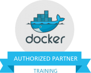
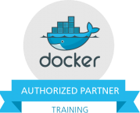
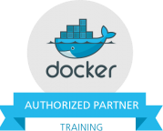

Formación Oficial Docker en España
 

Antelops, como Authorized Training Partner de Docker en España, ofrece los únicos cursos oficiales de Docker en España.
Saber más
Antelops, como Authorized Training Partner de Docker en España, ofrece los únicos cursos oficiales de Docker en España.
Saber másCurso de 2 días diseñado para Desarrolladores, DevOps y Administradores de Sistemas en el que se enseña cómo controlar el motor de Docker, la seguridad, Docker Machine, Docker Swarm y Docker Compose. Mediante ejercicios prácticos, se consigue pasar de ser un usuario neófito a tener gran soltura en el manejo de Docker. Incluso aunque tenga algo de experiencia con Docker, este curso incluye mejores prácticas y las últimas novedades para su aplicación en su organización.
Calendario¡ACTUALIZADO PARA LA VERSIÓN 1.9! Contenido presentado por el instructor, ejercicios y talleres prácticos. Los asistentes obtendrán un conocimiento sólido sobre Docker, Docker Hub y Registry, las herramientas de Orquestación de Docker y podrán integrar Docker en sus entornos con confianza. El material está en inglés pero las explicaciones de harán en español.
No son necesarios conocimientos previos sobre Docker, pero sí un conocimiento básico sobre comandos de Linux y el uso de la interfaz de línea de comandos . El alumno deberá llevar al curso un portátil con un cliente de SSH instalado, así como conexión Wifi.
Cada alumno recibirá el material del curso. Docker, Inc. proporcionará a cada asistente un certificado oficial tras completar exitosamente esta formación.
Atención: El número de asistentes es limitado para garantizar la mejor calidad del curso. Regístrese lo antes posible para asegurar su plaza.
Atención: El número de asistentes es limitado para garantizar la mejor calidad del curso. Regístrese lo antes posible para asegurar su plaza.
Antelops es una empresa de Consultoría y Formación en Cloud Computing y DevOps Automation. Somos especialistas en diseñar, implementar y soportar aplicaciones altamente escalables y adaptativas, usando las soluciones líderes en Cloud Computing y Automatización.
Descubra más sobre nosotros en nuestra página web o póngase en contacto directamente por email: